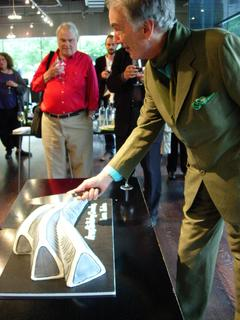
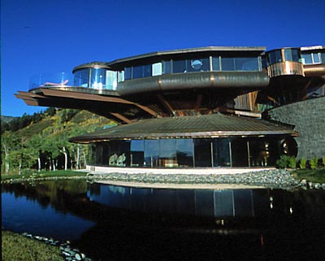
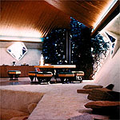

Who was Bruce Goff
-
Photo by Bob Bowlby
-
This will be a web site with materials related to my assocation for many
years with the greatest person (in many ways) I have ever known. I am much
aware that sentiment is shared by many who were fortunate enough to know him.
The preparation was requested by the Friends of Kebyar, and just constitutes
some of my memories and reflections. Whenever "BG people" get together most
of the time is spend on "BG stories", which in turn include stories of his
about the many creative people that were part of his life. I have tried
to include on occasion an actual fact or a more sober reflection.
-
On Bruce Goff
-
The preparation of the site was prompted by a gathering
held in London at the Tate Modern Gallery to honor his memory.
An archival cooy of their website at the time is available
here.
The event was part of the
2008 London Festival of Architecture.
-
These particular notes were done for a talk to a private audience in
a gathering on Sunday, June 22, of the
Friends of Kebyar,
a group formed to honor Goff's memory.
-
There is a "runup" piece to the Tate Event by
the architectural critic
Charles Jencks
called
"Looking, learning and laughing with Bruce Goff"
that updates critical commentary on his work.
As it happened Saturday, June 21, was the 69th birthday of Charles Jencks,
and this just-received

snapshot
shows me watching him cutting his birthday
cake, baked for him by the well-known architect
Zaha Hadid
(who received a degree in mathematics, let it be noted).
Perhaps we might note that Jencks (in his book entitled
The Architecture of the Jumping Universe: A Polemic: How Complexity Science
is Changing Architecture and Culture
maintains that Bruce Goff and Frank Lloyd Wright invented "fractilian architecture" before the science itself was discovered (!).
-
A very nice site on
Bruce Goff Architect
is the one prepared by
James Schildroth, who regards Goff as the most "fearless" Twentieth Century
American Architect.
-
-
-
A bit of information about the first
building that I was responsible for getting constructed is
Redeemer Lutheran Church
in Bartlesville, Oklahoma. The building has held up very well over the years
and visitors report that the congregation still very much appreciates it.
-

-
One of my favorite buildings was the Duncan house in Southern Illinois,
whose current owners apparently operate as a "bed and breakfast". Hugh
Duncan was a sociology professor who wanted a home for himself and his
wife Minna on a beautiful site in the hills, which would be divided into
two halves, a study for him and a music studio for his wife, along with
separate buildings in which his graduate students could work. This
original floor plan
shows the layout.Stories
about the construction could fill these pages.
-

-
One of Goff's last works was the
Los Angeles County Museum Pavilion for
Japanese Art,
-

-
The pavilion was completed
after Goff's death by the architect
Bart Prince who was a good friend and trusted associate.
-

-
Bruce Goff Comes to Rest Among Peers, describes the final disposition
of Mr. Goff's remains in Graceland Cemetery in Chicago, amongst many
of his architectural peers.
All these materials for the moment are rough drafts.
Click on any of the links below and follow along to learn what I remember.
Remembering BG
These two relate primarily to our personal and professional relationship.
Nothing exciting or important, just a chance to set it down.
-
Story
-
This is a longer piece, just sort of a chronological description
of how I connected with BG, and various aspects of that connection,
which still exists, as it does with anyone who ever knew him.
It is not part of any formal analysis of his work, or anything else,
to be read only if the history holds some interest for you, along
with my random thoughts.
-
Partnership
-
This explains a few of the more formal
aspects of our relationship (and explains that while I always
felt it a bit uncomfortable to be described in a formal way as a
"partner" or even "associate" in the sense that the term is used in
architecture, it certainly simplified dealing with immediate issues
of "who could decide what when". The credit for successes goes to him
and for failures to me.
Understanding BG
-
Keys
-
Since I had an opportunity to work closely with him
some observations may be particularly important to others.
They may give a different perspective than most have given, in part
because I was not in (any of) his profession(s).
-
Design
-
This is a bit of description of how BG, at least through my eyes and
in my collaborative interactions with him, created and presented his
designs for specific clients. These were memorable events for me, especially
realizing that he knew exactly how to "get things accepted", never a trick
for him, but always a serious moment. There is a bit on "Construction",
since I am not sure everyone understands or appreciates
how good he was at dealing with
actual contractors and workmen. Part of that charm was of course having
bright and capable young assistants (myself excluded since I was an "outsider",
but Bob Bowlby, Bob Faust, Bart Prince, and many others will know who I meant.
-
Construction
-
Perhaps in large part due to his apprenticeship at a very young age with
a major architectural firm, and as well his experiences in the Seabees
during the Second World War, BG was very adept at "getting along with
workmen". Given the demands of his designs and the very limited budgets
he was almost always faced with, this to me was a major factor in his
success.
-
The Design Process
-
This one is a bit more "serious", and is my mostly later attempts at
understanding his approach to design. Especially as I later learned
after "growing up" on my own both as a professor and a practicioner
of design in a totally different field, I began, and am still beginning
to understand, how much of a system he actually had and how "scientific"
in what is to me the proper sense he actually was.
Tales of BG
One thing everyone seems to love is to tell stories about BG, just as he
loved to tell us stories about Wright, and Endicott, and all sorts of
other folks he encountered. A few of his stories about them are actually
included.
It is always dangerous to start into stories, because the rest of the time can rreadily become nothing but that! Even a walk down the street with BG could become an event. He made sure if you were in a town with older construction that
you noticed every misstep an architect or builder or remodeller might have
made, and usually had a very twisted way of describing it: "see how the drainpipe struggled to get out and then tried to go back" or something similar was
a common pronouncment. I won't repeat any comments he made about people,
partially because my mind has either made sure to erase or block most of them,
but he always had a "take" on anyone. These were never intended to be cruel,
and he was very careful that the person described was not aware, but he
knew exactly how to poke pretensions under the ground.
-
taxes
-
I just couldn't resist adding this story. Its to me mostly about the effect
of having a paragraph that identified "where I went" in the wonderful book
by David DeLong, but it also characterizes what is was like to work with
him in a variety of ways. And I suspect the ultimate resolution of what
it seemed to me could have been an enormous problem, actually became
instrumental in seeing that some of the information about him would be
preserved. He never wanted "followers", but I suspect as an avid reader
himself of biography he would understand how interesting and important such information could (or could not) become later on.
Like most stories this one is funny and sad.
-
miscellany
-
Just a few reminiscences it seemed these notes would be incomplete without.
References
I have gotten into the (for me good) habit of just starting off about
anything as a link to Wikipedia. In my particular field the folks who
started it were in fact in the field, and their references have become
better and better (and some think are going to get worse and worse).
Some universities love them (perhaps not so many) and some hate them,
and I have no idea what those in architecture or art think of them.
My view is that I am not endorsing the reference, just pointing somewhere
that I have looked and found to point correctly to the other references I might give
And it is somewhere that is likely to be available (at no cost)
to everyone. So if you don't like what they say look somewhere else.
My late (undergraduate) student and good friend Paul Flaherty is primarily
responsible for the original idea and implementation of AltaVista, the
first great search engine, and now Google has become just an automatic
part of my life, and one that just grazes the value that the Internet can
provide.
The Internet
In a 2000 interview (anonymous) about "the impact of the Internet in the next
century" I saw it as two-fold:
- No more authoritative references
-
No more need for "textbooks" and "encyclopedias" that entomb the
answers
(and for that matter professors who don't "profess" but only "expound").
Everyone anywhere now has access to exactly the same "information",
and it is available whenever and wherever they wish to access it.
- No more accurate information
-
This (should) put schools and especially universities into what should
always have been their real business: helping others develop their own
ability to discriminate the value of information and begin to use it
along with their own imagination to create what they need.
So my references (if any) are in the article as their subject is encountered,
and they are really only to make sure that my spelling agrees with that of
someone else, and that you will have a place to start if you want to follow
the topic further. Its your job to decide whether they are worthwhile or not.